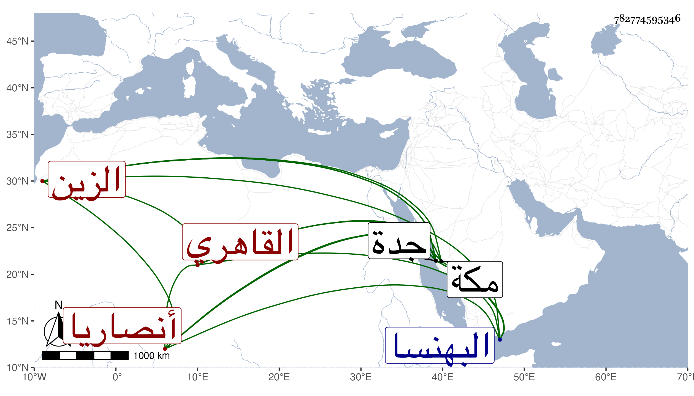

0902Sakhawi.DawLamic.ITO20230111-ara1.EIS1600.782774595346
Biography ID: 782774595346
95
عبد الباسط بن محمد بن محمد بن أحمد الزين الفشني الأصل بفاء ثم شين معجمة ساكنة من عمل البهنسا القاهري المولد والدار مباشر جدة وصهر الجمال محمد بن عيسى القرشي ويعرف بين أهل بلده بابن الصيرفي وربما نسب أنصاريا كان أبوه ممن باشر للذخيرة في الأعمال الجيزية وتوابعهم فتدرب به في المباشرة بحيث تميز وعمل كرائيا بمركب الشهابي بن العيني ، وخدم الأشرف قايتباي حين امرته بأقفاص فتسحب لما بقي عليه من الخراج إلى جدة ثم لما تسلطن استقر به في مباشرة جدة فباشرها في خدمة الأمير شاهين الشاد بها بضع عشرة سنة ثم مع أبي الفتح المنوفي ثم مع قراجا ثم اشترك مع أبي الفتح فيها بل عرض عليه الاستقلال فامتنع ، وكان مجموع مباشرته بها نحو ثمان عشرة سنة إلى أن مات بها في ثالث عشري صفر سنة خمس وثمانين وحمل لمكة فدفن بمعلاتها ، ولم يكمل الأربعين ، وهو عم الزين أبي بكر ابن شقيقه الشهاب أحمد محتسب جدة الذي أبوه في الاحياء وبلغني أنه قرأ القرآن وفي المنهاج وغيره واشتغل .
